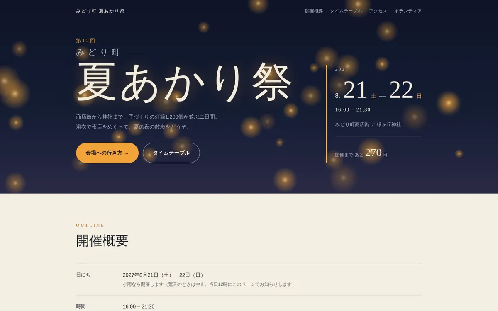
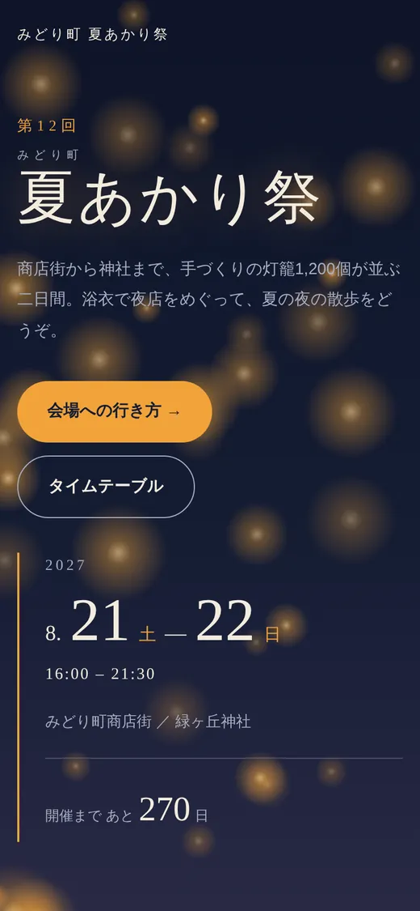

みどり町 夏あかり祭
商店街と神社で開く夏祭りの案内ページ。「当日来てもらう」のがゴールなので、日にち・場所・行き方をいちばん目立たせました。
- 区分
- 自主制作
- 種類
- イベントLP（1ページ）
- 担当
- 構成・デザイン・実装
- 対応
- PC・スマホ


Overview背景・目的・ターゲット
- 制作背景
- 商店街振興会が主催する、灯籠を並べる夏祭りを想定しました。地域のイベントは紙のチラシが中心で、スマホで「何時から？どこで？どう行く？」を確認しにくいことが多いです。当日スマホで見ても迷わない案内ページを作りました。
- 目的
- お祭りに来てもらうこと。あわせて、運営を手伝うボランティアを集めること。
- ターゲット
- 近所に住む家族連れや学生。当日、駅や家からスマホで時間と行き方を調べる人。
Conceptデザインの考え方
「夏の夜の灯籠」がテーマです。夜空の藍色と和紙の生成り色の2色を交互に重ね、灯籠のあかり色だけをアクセントにしました。お祭りの名前だけを筆文字にして、チラシのような特別感を出しています。夜のイベントなので、端末の設定に関係なく夜の配色で固定しました。
配色
- #141C33： 夜空の藍色
- #F4EEE2： 和紙の生成り色
- #F2A33A： 灯籠のあかり色
- #C4442E： 朱色（注意）
書体
Yuji Syuku（お祭りの名前）／ Zen Antique（見出し・日付）／ Zen Maru Gothic（本文）
Process制作の流れ
- 冬祭りとして制作最初は12月の「冬あかり祭」として、豚汁や甘酒の屋台がある設定で作りました。
- 写真と季節のズレに気づく用意した写真を入れたところ、木の葉や浴衣、かき氷の屋台など、どれも夏の写真でした。文章と写真の季節が合わないと、見る人が違和感を持ちます。
- 夏祭りとして作り直し画像生成の回数に制限があったため、写真を作り直すのではなく、お祭りを夏に変えることにしました。日程、点灯式の時刻（日の入りに合わせて18:45）、屋台の内容、注意事項（防寒 → 熱中症対策）まで、季節に合わせてすべて見直しました。
- 写真の調整写真をWebPに変換して3枚で約350KBにし、カードに合わせて4:3に切りそろえて表示しました。
制作にはAIツール（Claude・ChatGPT）を使い、表示の確認と修正、色や大きさの調整は自分で行いました。写真はAIで生成した画像です。
Tech使用技術・実装した機能
- 灯籠のあかりのアニメーションCanvasに光の粒を描き、ゆっくり上にのぼらせています。大きい粒ほど速く動かして奥行きを出しました。「動きを減らす」設定の人には止めた状態で表示します。
- 開催までのカウントダウン開いた日から開催日までの日数を自動で計算し、開催中・終了後は表示を切り替えます。
- タイムテーブルの切り替え土曜・日曜をボタンで切り替えます。スクリーンリーダーでもタブとして伝わるよう、role="tab" などを付けました。
- SVGの案内図駅から会場までの道のりを、拡大してもぼやけないSVGで描きました。
// 開催日までの日数を計算する
var days = Math.ceil(
(EVENT_START - new Date()) / (1000 * 60 * 60 * 24)
);
box.innerHTML = '開催まで あと<strong>' + days + '</strong>日';